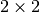
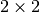

MatrixPotential2S¶
About the MatrixPotential2S class¶
The WaveBlocks Project
@author: R. Bourquin @copyright: Copyright (C) 2010, 2011, 2012 R. Bourquin @license: Modified BSD License
Inheritance diagram¶
Class documentation¶
- class WaveBlocks.MatrixPotential2S(expression, variables)¶
This class represents a matrix potential
 . The potential is given as an
analytical  matrix expression. Some symbolic calculations with
the potential are supported. For example calculation of eigenvalues and
exponentials and numerical evaluation. Further, there are methods for
splitting the potential into a Taylor expansion and for basis transformations
between canonical and eigenbasis.
. The potential is given as an
analytical  matrix expression. Some symbolic calculations with
the potential are supported. For example calculation of eigenvalues and
exponentials and numerical evaluation. Further, there are methods for
splitting the potential into a Taylor expansion and for basis transformations
between canonical and eigenbasis.- calculate_eigenvalues()¶
Calculate the two eigenvalues of the potential
.
We can do this by symbolical calculations. The multiplicities are taken into account.Note
Note: the eigenvalues are memoized for later reuse.
- calculate_eigenvectors()¶
Calculate the two eigenvectors of the potential
.
We can do this by symbolical calculations.Note
The eigenvectors are memoized for later reuse.
- calculate_exponential(factor=1)¶
Calculate the matrix exponential
 . In this case
the matrix is of size thus the general exponential can be calculated analytically.
. In this case
the matrix is of size thus the general exponential can be calculated analytically.Parameters: factor – A prefactor  in the exponential.
in the exponential.
- calculate_hessian()¶
Calculate the hessian matrix for each component of the potential. For potentials which depend only one variable
 , this equals the second derivative.
, this equals the second derivative.
- calculate_jacobian()¶
Calculate the jacobian matrix for each component of the potential. For potentials which depend only one variable
, this equals the first derivative.
- calculate_local_quadratic(diagonal_component=None)¶
Calculate the local quadratic approximation matrix
 of the potential’s
eigenvalues in
of the potential’s
eigenvalues in  . This function can be used for the homogeneous case
and takes into account the leading component
. This function can be used for the homogeneous case
and takes into account the leading component  .
If the parameter is not given, calculate the local quadratic approximation
matrix of all the potential’s eigenvalues in . This function is used
for the inhomogeneous case.
.
If the parameter is not given, calculate the local quadratic approximation
matrix of all the potential’s eigenvalues in . This function is used
for the inhomogeneous case.Parameters: diagonal_component – Specifies the index  of the eigenvalue
of the eigenvalue  that gets expanded into a Taylor series
that gets expanded into a Taylor series  .
.
- evaluate_at(nodes, component=None, as_matrix=True)¶
Evaluate the potential matrix elementwise at some given grid nodes
 .
.Parameters: - nodes – The grid nodes we want to evaluate the potential at.
- component – The component that gets evaluated or ‘None’ to evaluate all.
- as_matrix – Returns the whole matrix instead of only a list with the eigenvalues .
Returns: A list with the
 entries evaluated at the nodes.
entries evaluated at the nodes.- nodes – The grid nodes
- evaluate_eigenvalues_at(nodes, component=None, as_matrix=False)¶
Evaluate the eigenvalues at some grid nodes
.Parameters: - nodes – The grid nodes we want to evaluate the eigenvalues at.
- component – The index of the eigenvalue that gets evaluated.
- as_matrix – Returns the whole matrix instead of only a list with the eigenvalues .
Returns: A sorted list with
 entries for the two eigenvalues evaluated at the nodes. Or a single value if a component was specified.
entries for the two eigenvalues evaluated at the nodes. Or a single value if a component was specified.- nodes – The grid nodes
- evaluate_eigenvectors_at(nodes)¶
Evaluate the eigenvectors at some grid nodes
.Parameters: nodes – The grid nodes we want to evaluate the eigenvectors at.Returns: A list with the two eigenvectors evaluated at the given nodes.
- evaluate_exponential_at(nodes)¶
Evaluate the exponential of the potential matrix
 at some grid nodes .
at some grid nodes .Parameters: nodes – The grid nodes we want to evaluate the exponential at.Returns: The numerical approximation of the matrix exponential at the given grid nodes.
- evaluate_hessian_at(nodes, component=None)¶
Evaluate the hessian at some grid nodes
for each component of the potential.Parameters: - nodes – The grid nodes the hessian gets evaluated at.
- component – The index tuple that specifies the potential’s entry of which the hessian is evaluated. (Or ‘None’ to evaluate all)
Returns: Either a list or a single value depending on the optional parameters.
- nodes – The grid nodes
- evaluate_jacobian_at(nodes, component=None)¶
Evaluate the jacobian at some grid nodes
for each component of the potential.Parameters: - nodes – The grid nodes the jacobian gets evaluated at.
- component – The index tuple that specifies the potential’s entry of which the jacobian is evaluated. (Defaults to ‘None’ to evaluate all)
Returns: Either a list or a single value depending on the optional parameters.
- nodes – The grid nodes
- evaluate_local_quadratic_at(nodes, diagonal_component)¶
Numerically evaluate the local quadratic approximation matrix
of
the potential’s eigenvalues in at the given grid nodes .Parameters: - nodes – The grid nodes we want to evaluate the quadratic approximation at.
- diagonal_component – Specifies the index of the eigenvalue that gets expanded into a Taylor series .
Returns: A list of arrays or a single array containing the values of at the nodes
.- nodes – The grid nodes
- evaluate_local_remainder_at(position, nodes, diagonal_component=None, component=None)¶
Numerically evaluate the non-quadratic remainder matrix
 of the quadratic
approximation matrix of the potential’s eigenvalues in at the
given nodes . This function is used for the homogeneous and the
inhomogeneous case and just evaluates the remainder matrix .
of the quadratic
approximation matrix of the potential’s eigenvalues in at the
given nodes . This function is used for the homogeneous and the
inhomogeneous case and just evaluates the remainder matrix .Parameters: - position – The point
 where the Taylor series is computed.
where the Taylor series is computed. - nodes – The grid nodes we want to evaluate the potential at.
- component – The component of the remainder matrix that is evaluated.
Returns: A list with a single entry consisting of an array containing the values of
at the nodes .- position – The point
- get_number_components()¶
Returns: The number  of components the potential supports. This is also the size of the matrix. In the current case it’s 2.
of components the potential supports. This is also the size of the matrix. In the current case it’s 2.
- potential = None¶
The matrix of the potential
.
- project_to_canonical(nodes, values, basis=None)¶
Project a given vector from the potential’s eigenbasis to the canonical basis.
Parameters: - nodes – The grid nodes for the pointwise transformation.
- values – The list of vectors
 containing the values we want to transform.
containing the values we want to transform. - basis – A list of basis vectors
 . Allows to use this function for external data, similar to a static function.
. Allows to use this function for external data, similar to a static function.
Returns: Returned is another list containing the projection of the values into the eigenbasis.
- nodes – The grid nodes
- project_to_eigen(nodes, values, basis=None)¶
Project a given vector from the canonical basis to the eigenbasis of the potential.
Parameters: - nodes – The grid nodes for the pointwise transformation.
- values – The list of vectors containing the values we want to transform.
- basis – A list of basisvectors . Allows to use this function for external data, similar to a static function.
Returns: Returned is another list containing the projection of the values into the eigenbasis.
- nodes – The grid nodes
- x = None¶
The variable
that represents position space.